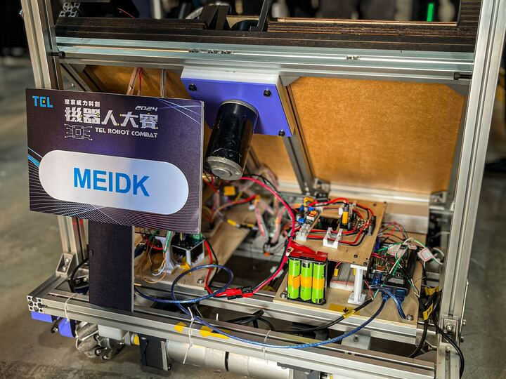
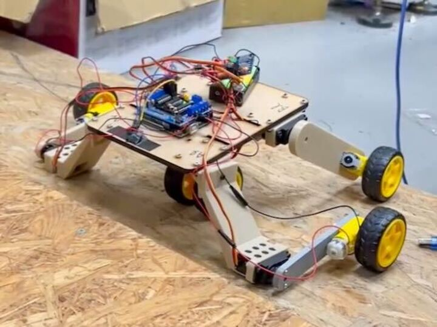

Work:
Panda Robot - Motion Control
current focus
Industrial Technology Research Institute (ITRI), Mechanical and Mechatronics Systems Research Lab.
- Developed perception algorithms for a collaborative robot using computer vision and sensor fusion.
- Integrated ROS2 nodes for real-time data processing and feedback.
Panda Robot - Perception
Industrial Technology Research Institute (ITRI), Mechanical and Mechatronics Systems Research Lab.
- Perception algorithms were developed to enable a panda-inspired climbing robot to detect and localize tree trunks in outdoor environments.
- An auto-labeling system was implemented with SAM and LKT Tracker to improve dataset efficiency and annotation accuracy.
- YOLOv8 models were trained and optimized with Weights & Biases sweeps, then deployed on Jetson Orin Nano using ONNX acceleration for real-time inference.
- Robust localization was achieved by replacing ICP-based visual odometry with a VSLAM framework, ensuring stable mapping even under occlusion.
Research:

Modeling and Control of a 2D Inverted Pendulum
current focus
Robotics, Autonomy, and Mechatronics Systems Lab (RAMS), Dept. of ME, PI: Prof. Hsien-Ting Chang
- Designed and simulated a spherical inverted pendulum mounted on a mecanum wheel mobile chassis using MATLAB and Simulink.
- Implemented and compared advanced control strategies including LQR, SMC, SOSMC, and MPC for stabilization and trajectory tracking.
- Analyzed the nonlinear dynamics of the coupled pendulum–mobile platform system to evaluate controller robustness.
- Validated performance through simulation studies with future work aimed at experimental implementation on the physical platform.

Autonomous Exploration and SLAM Mobile Robot
Robotics, Autonomy, and Mechatronics Systems Lab (RAMS), Dept. of ME, PI: Prof. Hsien-Ting Chang
- Built a differential-drive mobile robot and deployed navigation, SLAM, and autonomous exploration algorithms
- Enabled the robot to map unknown environments, autonomously explore, and re-localize
- Implemented the system in ROS2 as the communication framework for navigation, and control
- Integrated hardware and software into a complete autonomous operation pipeline, from chassis design to exploration
Competition & Exhibition:

Design and Implementation of a Frisbee-Launching Mobile Robot
TEL Robot Combat | Advisor: Prof. Tsai, Shyi-Jeng
- Participated in the 2024 Tokyo Tech Robocon and successfully advanced to the finals
- Achieved omnidirectional mobility, wireless remote control, automatic reloading, and continuous frisbee launching
- Applied advanced control systems to ensure smoother and more stable robot operation
- Integrated stereo vision and machine learning–based targeting system for accurate frisbee launching
Projects:

Stair-Climbing Robot
Independent Project | Advisor: Prof. Tsai, Shyi-Jeng
- Designed and fabricated a Bluetooth-controlled stair-climbing vehicle using 3D printing, laser cutting, and CAD-based mechanical design.
- Integrated five servo motors and four DC motors with Arduino UNO, motor drivers, and a Bluetooth module for wireless control via MIT App Inventor.
- Achieved reliable stair-climbing capability for 8 cm steps, demonstrating effective integration of mechanical structure and control systems.